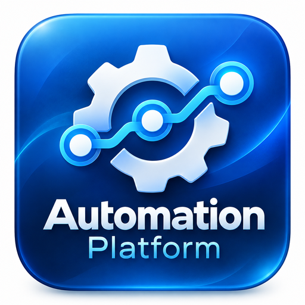

Windows
Windows
Windows 10 / 11 · 64-bit
A familiar desktop app with a shortcut and automatic browser launch.
The Windows launcher has been tested locally; the public package is not published yet.

Automation Platform How it worksSTUDENT DESKTOP LAUNCHER
Launch and manage your Automation Platform locally. Choose your operating system, install the launcher, and start working — no command line needed.
Choose your downloadGET STARTED
Pick the version that matches your computer.
Windows 10 / 11 · 64-bit
A familiar desktop app with a shortcut and automatic browser launch.
The Windows launcher has been tested locally; the public package is not published yet.
Desktop Linux · x86_64
Run the same launcher on your Linux workstation with Docker Engine.
Linux package pending build and testing.
Mac · Apple Silicon / Intel*
An elegant Mac app for launching your local automation workspace.
Mac package pending platform-specific builds and testing.
* macOS architectures will be confirmed when release packages are built.
SIMPLE SETUP
Make sure Docker Desktop or a compatible Docker Engine is installed and running.
Download the package for your operating system and complete the setup.
Open the launcher, choose an available port, and launch the homepage in your browser.